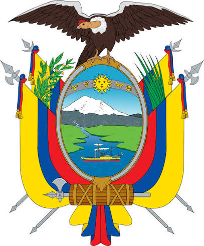
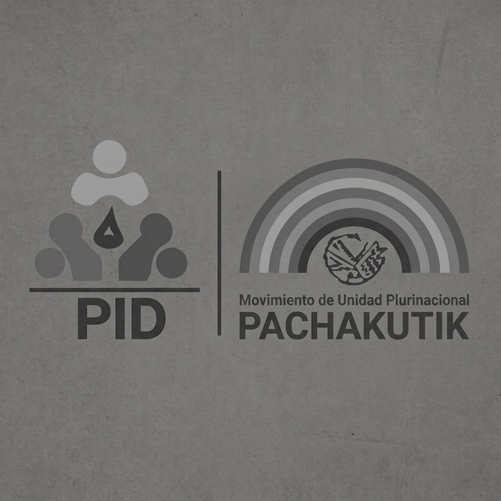

Una vida de trabajo, raíces profundas y compromiso firme con El Tambo.
El Tambo 2027
Ver video de presentación
Volver a reproducir
Miguel López
Candidato a la Alcaldía
Miguel López no es un político improvisado; es un hombre de territorio, nacido y criado en nuestra tierra Tambeña. Conoce de cerca el esfuerzo del agricultor, el sueño de los jóvenes y la valentía de las mujeres emprendedoras de nuestras comunidades y barrios urbanos.
Su trayectoria se define por una sola premisa: servir con honestidad y transformar con hechos, no con promesas vacías. Hoy encabeza un movimiento ciudadano que busca devolverle a El Tambo el sitial de orgullo que le corresponde en la provincia del Cañar.
Simulador Papeleta Oficial 2027
Así votaremos por el Cambio en El Tambo
Toca el casillero de Miguel López (Lista 17) para simular tu voto.

República del EcuadorSeccionales 2027
ALCALDESA / ALCALDE
EL TAMBO - CAÑAR
CNE Ecuador¡Democracia!
SE ELIGE UNA (1) LISTA DE ALCALDESA / ALCALDE
Unidad Popular2
—
PABLO VEGA
Alianza 4-184-18

—
MANUEL BALBOA
Alianza 6-36-3
—
CARLOS BERMEO
Mov. ADN7
—
JOSELINE TIPANTA
Tu Opción
P. Socialista17
MIGUEL LÓPEZ
Ñukanchik Minka23-21-8
—
ANÍBAL URGILEZ
IMP. CNE - 2026 - EL TAMBO#ElTamboSomosTodos
¡Voto simulado con éxito por Miguel López (Lista 17 - PSE)!
EN VIVO · Actualidad 2027
Novedades & Actualizaciones
1 / 5
TerritorioCoyoctor
Pobladores proponen plan emergente para la calidad del agua potable
Las familias expusieron la necesidad de fiscalizar y mejorar las plantas de tratamiento con monitoreo técnico permanente.